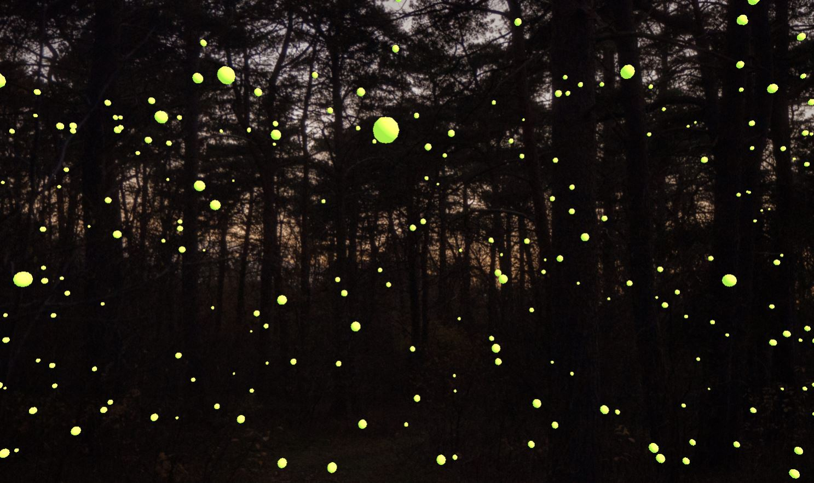
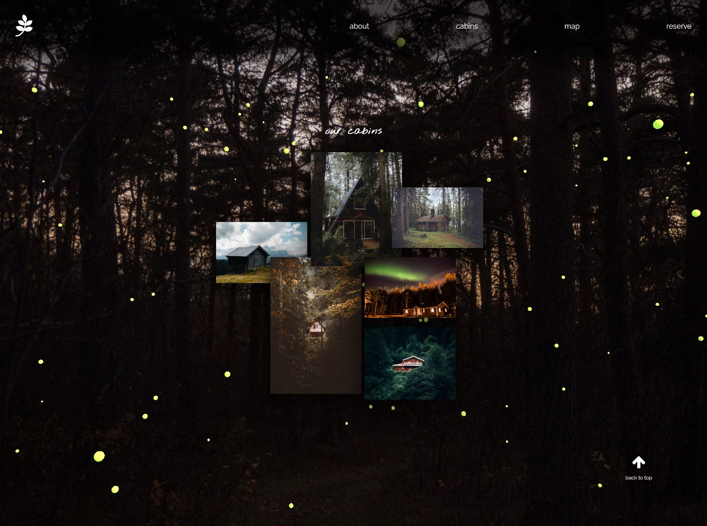

Tourism site with Three.js

This site showcases a 3D background made with Three.js, overlaid with a vanilla HTML, CSS, and JavaScript website. The website serves as an MVP for a tourism company, specifically one that rents out remote cabins in the forest.
Purpose of project
I always enjoy front end development and it is important for me to keep improving my skills in this area. 3D sites have been trendy over the past few years so I decided to give it a try.
I learned the basics of Three.js and created a 3D scene with floating spheres. This scene reminded me of fireflies flying around at dusk so I decided to use it as the background of a basic website with a tourism theme.
Normally I use a framework like React in my projects, but I went back to basic HTML, CSS, and JavaScript to create this one-page site. While it’s beneficial to learn new skills, it’s also important to not lose grasp of the foundations; this site allowed me to practice these old skills again.
Design considerations
The floating spheres were made a pale yellow-green to mimic fireflies. The background image is a scene of a forest just after sunset. It remains fixed on the page, with content scrolling above it, floating along like the fireflies do. It feels like you are scrolling the content rather than down the page.
White text is used to contrast with the dark background. Anywhere there is text, there is a text-shadow behind it. The top nav bar and footer also have a dark, transparent background. A view can still see the image and fireflies behind these objects, but the brightness is decreased to keep the text readable. I kept this effect subtle so a viewer is unlikely to notice it.
Cursive font is used for large headers to invoke a relaxed, whimsical feeling that would entice users to book a vacation through the platform. It is paired with a sans-serif font for the main content to not overwhelm the viewer.
Pale orange, matching the sunset in the background, is used as an accent colour when links are hovered over.
Notes on development
At first I wasn’t sure what kind of 3D project I wanted to make. I started out by following a Three.js tutorial and creating a basic 3D site with “stars” floating stationary in the background. This was interesting by itself but I wanted to make it my own. If I could get the spheres to move around, perhaps they could look like snowflakes or fireflies. I viewed more examples of Three.js creations and found one with floating spheres, and replicated some of the code related to the motion of the spheres. This gave me a scene with spheres floating along all planes, and when I changed their colour to yellow-green, they genuinely did resemble fireflies.
I decided a tourism theme went well with this scene, and decided to make a mock site where users can reserve cabins. There is no actual reserve functionality - this is just an MVP, an example of the site’s front end only.
Most of my sites have multiple pages, so this time I wanted to test my vanilla JavaScript and DOM manipulation skills by creating a single page site. Instead of separate pages, each area would have its own dedicated section on the home page, and it would be accessible either by scrolling or clicking the link on the top nav bar. Each section is given an id that matches its link, and when the link is clicked, the viewport scrolls smoothly down (or up) the page. This scrolling action is animated so there isn’t a jarring jump.
The nav bar is fixed to the top of the page so navigation is always available. To save space on small screens and to ensure the content has room to breathe, the nav bar shrinks down any time the viewport is past the intro section of the page.
The site layout is one large CSS grid, with each section assigned to one row of the grid. The photos in the “cabins” section are also placed on a grid, which converts to a single column at mobile size.
Images are from Unsplash and Pexels.